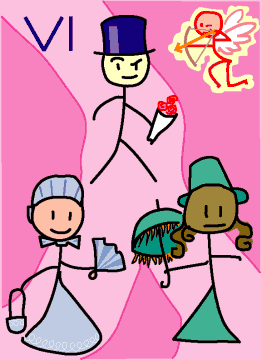

→
Damian Cugley →
Alleged Tarot 2002 →
png →
→
Damian Cugley →
Alleged Tarot 2002 →
png →
| « V. The Pope | VII. The Chariot » | |
|  | ||
Upright: choice, decision, commitment
Reversed: indecision, bad decision
In modern decks, this card shows a couple embracing. I have followed an older tradition showing suitor apparently choosing between two women. This card represents choice, the sort of choice where both alternatives are attractive and one must be abandoned forever. This reflects a reality of mediaeval life, which is that your choice of lover is significant (think doweries and family alliances) and irrevocable in a way it is not in modern times.
To emphasize the choice aspect I show the two women standing on different branches of a forked path. The vaguely Victorian clothing is the result of my whimsical decision around the time I was drawing the Magician that the trumps would all be wearing hats of some sort. When it came to dressing a suitor, a top hat just seemed appropriate.
See also the description on the Queen of Pentacles Tarot site
See also Thirteen’s description on the Aeclectic Tarot site
If your browser supports SVG, then you should visit the SVG version of this page. It is so much more cool!